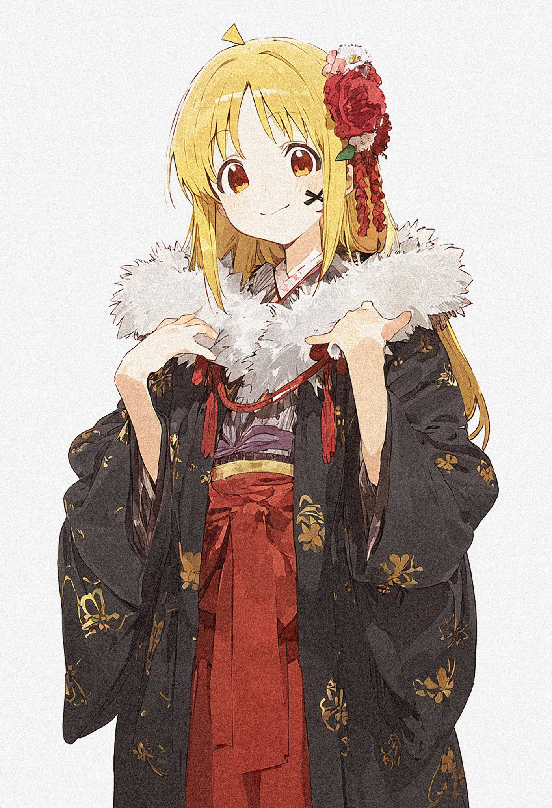

「ぼっち・ざ・ろっく！」は日本のアニメで、音楽と夢にまつわる物語を描いています。女子高生の後藤ひとりはバンドを組むことを夢見ていますが、人との交流が苦手でその夢を実現することができませんでした。ある日、ギタリストを急募していた伊地知虹夏に見つかり、「絆バンド」に加わることになり、山田涼と喜多郁代と共に音楽活動を始めます。 このアニメは、主人公たちの成長を通して、彼らが音楽に対する情熱と夢を追求する過程を示しています。
アニメは2022年10月8日に初放送され、CloverWorksが制作しました。ビデオ投稿サイトである程度の知名度を持つ「ギターヒーロー」後藤ひとりを中心に、彼女がバンドに加わり新しい生活を始める物語が語られます。
後藤ひとり：主人公で、主奏ギターと作詞を担当。性格は陰で、コミュニケーション障害を持つ女の子です。 バンドに加入する前は友達がいなかった。中学時代にバンドのインタビューを聞いて以来、陰の人間でもバンドで輝けると信じて毎日6時間ギターを練習してきました。 彼女は音楽を通じて他人からの認知を得たいと願っています。誕生日は2月21日、血液型はO型です。
伊地知虹夏：ドラムを担当し、明るい性格の女の子です。下北沢高校2年生。姉と二人で生活しており、幼い頃から多くのバンド文化を知っています。 誕生日は5月29日、血液型はA型。彼女は「絆バンド」を結成し、後藤ひとりをバンドに誘いました。

山田涼：ベースと作曲を担当し、下北沢高校2年生です。冷静で表情が乏しい女の子で、 レコード店や古着屋を好んでいます。山田涼は成熟した音楽技術を持ち、誕生日は9月18日、 血液型はAB型です。
喜多郁代：リズムギターとメインボーカルを担当し、秀華高校1年5組の生徒です。 社交的で外見が可愛く、おしゃれやショッピングが好きな女の子です。喜多郁代は山田涼に好意を持ち、 絆バンドに加わりました。誕生日は4月21日、血液型はA型です。